방준석: 한국 음악과 영화를 수놓은 선율의 장인
대한민국 모던락 시작과 유앤미블루
방준석은 대한민국의 싱어송라이터이자 영화 음악 작곡가입니다.
1994년, 그는 이승열과 함께 **유앤미블루**라는 밴드를 결성했습니다. 유앤미블루는 1집 앨범 Nothing's Good Enough를 발표하며 국내에 모던 록 음악을 도입했습니다.
이 밴드는 평단의 극찬을 받았으나 상업적으로 큰 성과를 거두지는 못했습니다.
영화 음악 감독으로의 도약
유앤미블루 이후 방준석은 영화 음악 감독으로 활동하며 그의 독자적인 음악 세계를 펼쳤습니다.
주요 영화 및 드라마 OST 작품:
- 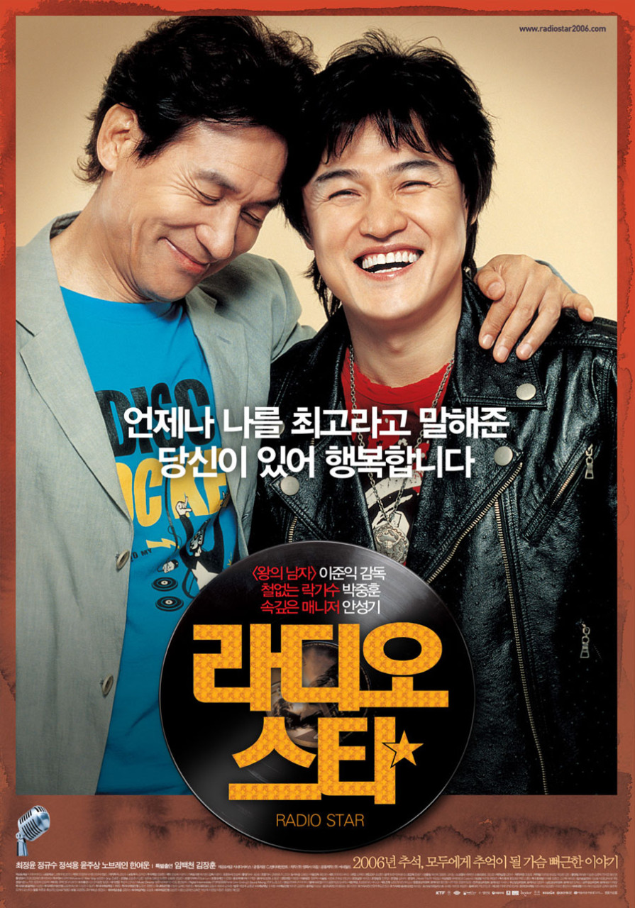 《라디오 스타》
- 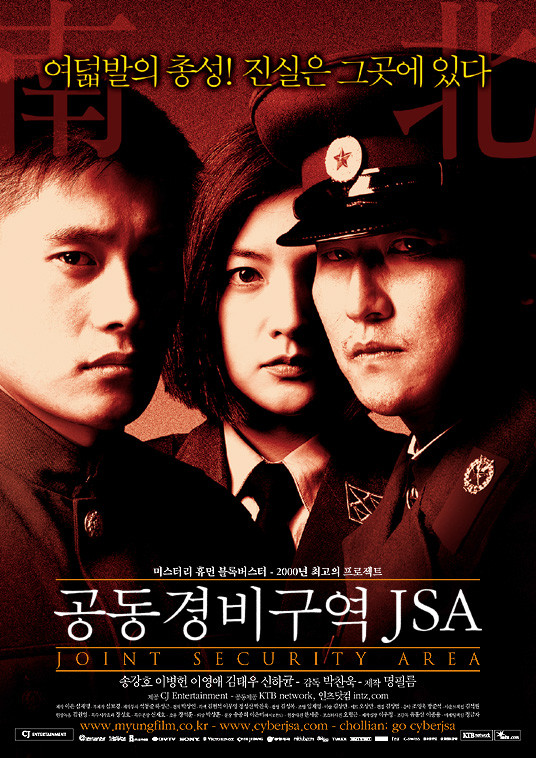 《공동경비구역 JSA》
- 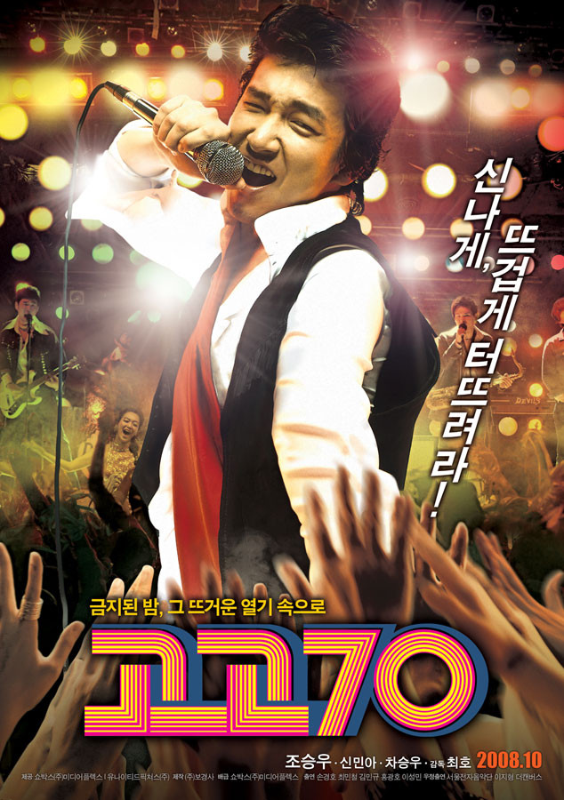 《고고 70》
- 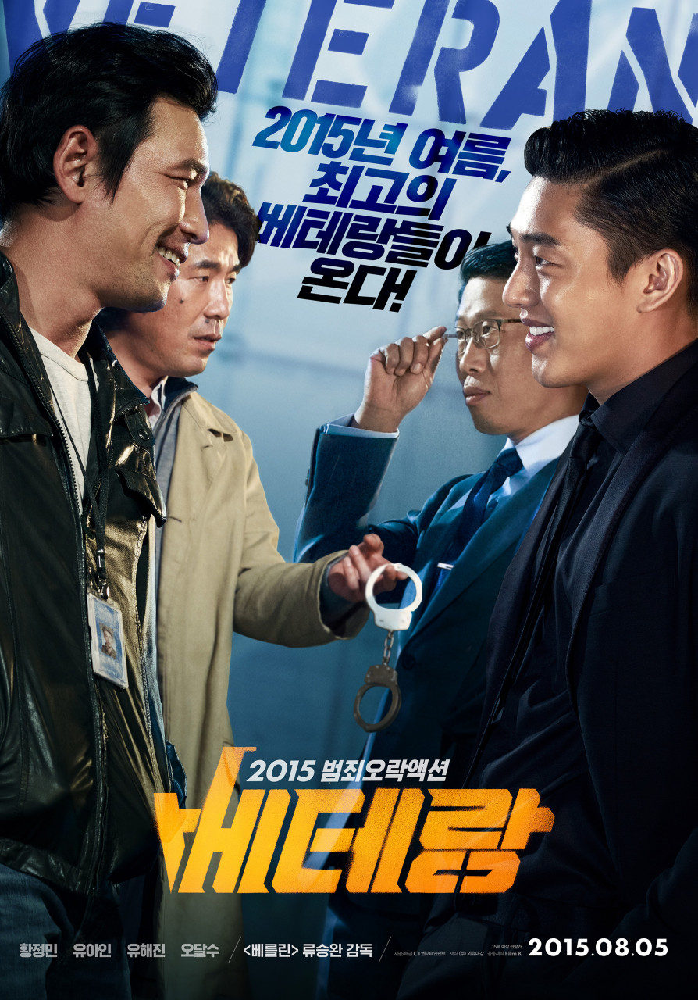 《베테랑》
- 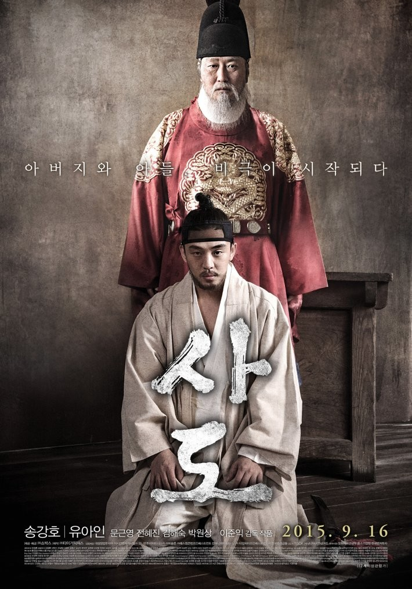 《사도》
- 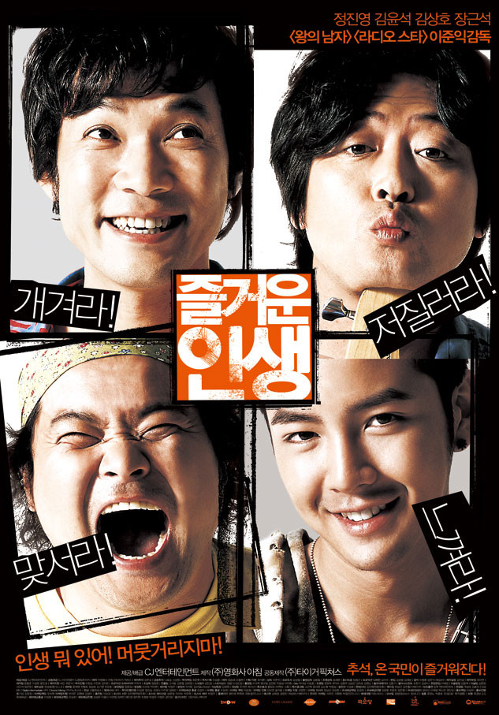 《즐거운 인생》
- 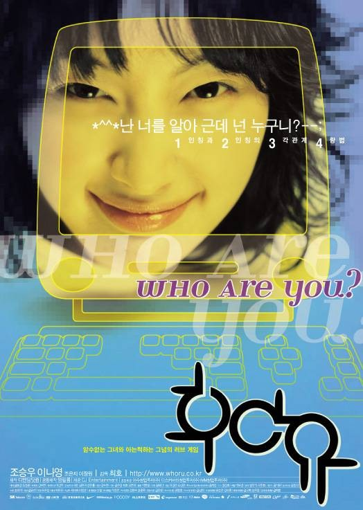 《후아유》
- 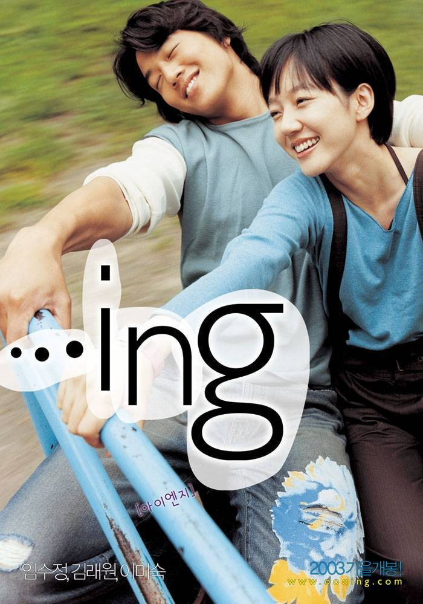 《...ing》
- 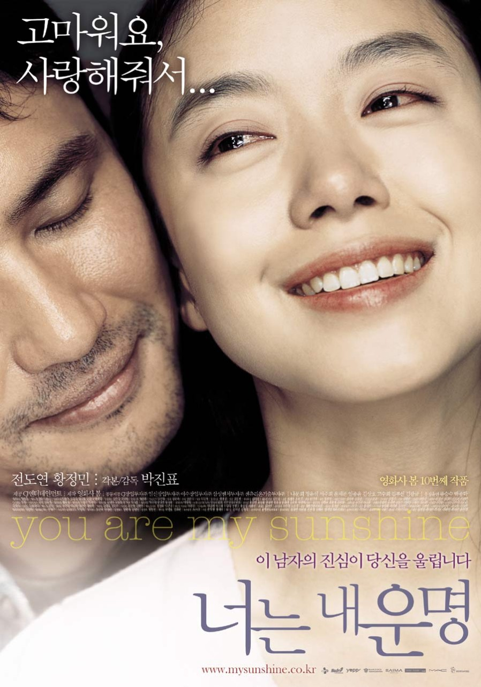 《너는 내 운명》
- 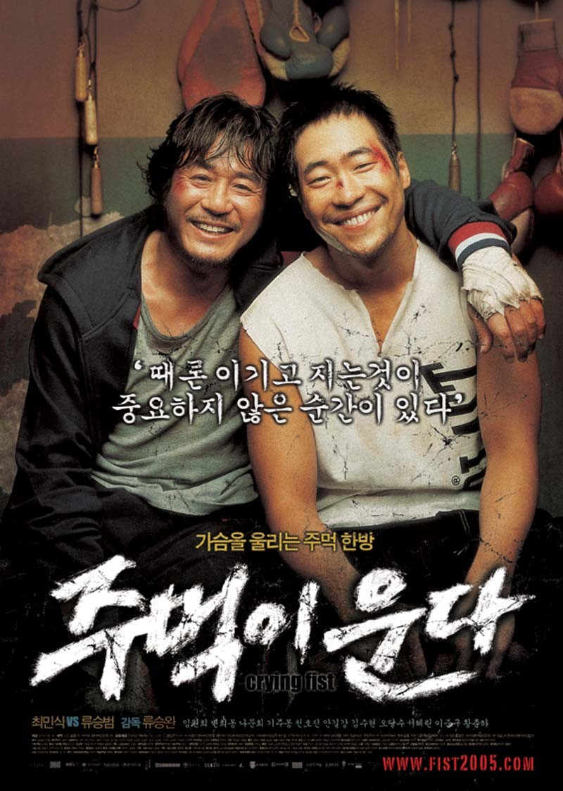 《주먹이 운다》
- 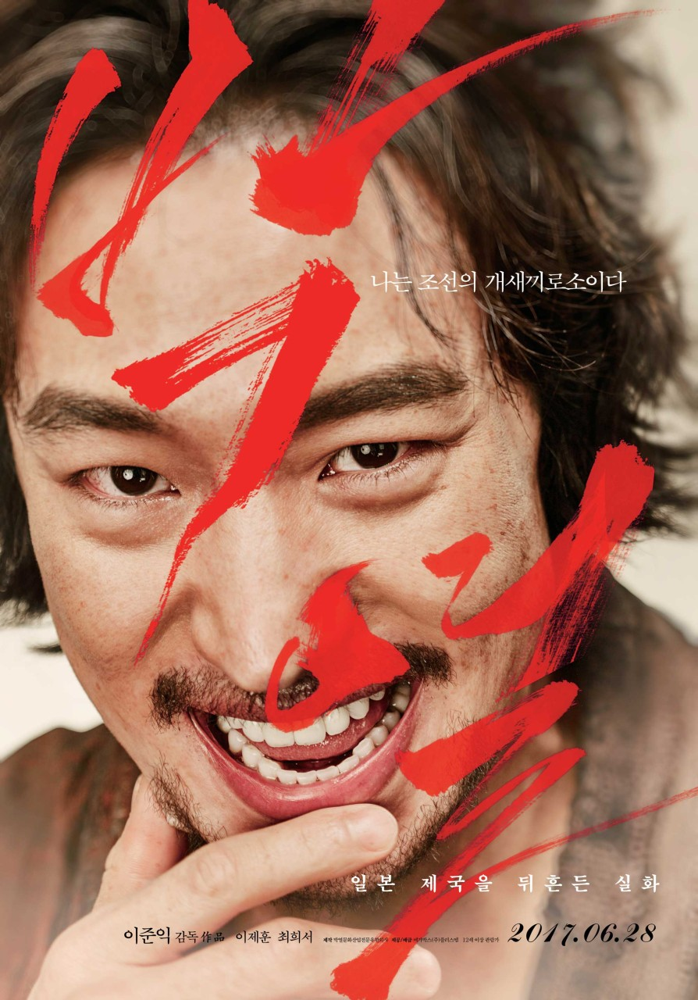 《박열》
- 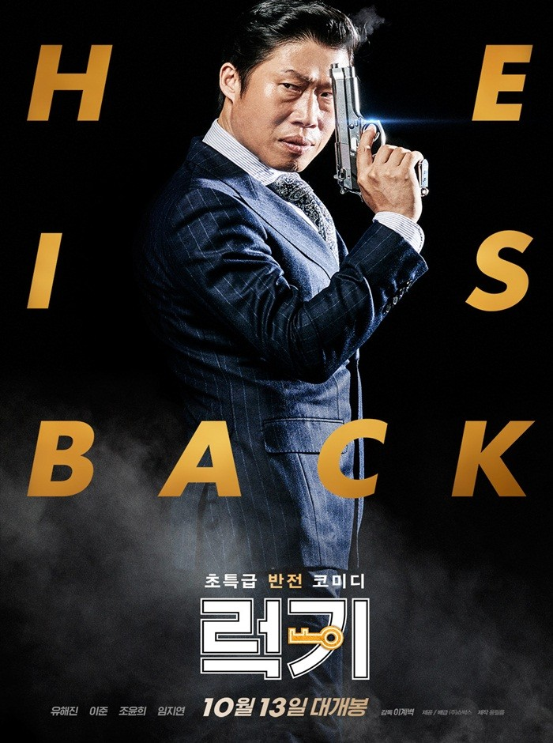 《럭키》
특히 영화 **《베테랑》의 메인 테마 '베테랑 팀 - Team Veteran'**과 영화 **《라디오스타》의 "비와 당신"**은 그가 작사/작곡한 곡으로 잘 알려져 있습니다. 그는 조영욱, 이병우, 달파란, 장영규 등과 함께 국내 영화 음악계의 주요 인물로 꼽힙니다.
프로젝트 밴드 '방백'
영화 음악 작업 외에도, 그는 어어부밴드의 보컬 백현진과 함께 **방백**이라는 프로젝트 밴드를 결성하여 활동했습니다.
안타까운 소식: 영원한 선율
왕성한 활동을 이어가던 중 위암 치료를 하였고 완치 판정을 받기도 했으나 재발하여 투병을 이어가다 51세로 2022년 3월 26일 오전 7시 위암으로 사망하였습니다.
2024년 영화 **《베테랑2》**에서도 그를 추모하는 문구가 나왔습니다. 그의 음악은 영원히 우리 곁에 남아있을 것입니다.